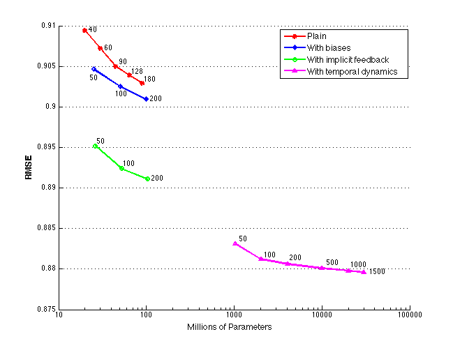

Contents
function koren
legend_version = 1;
background_color = [255/255, 204/255, 153/255];
%background_color = 'w';
========================================================================
data
plain = [19910800, 0.9094, 40, 22000000, 0.9094;
29866200, 0.9072, 60, 33000000, 0.9072;
44799300, 0.9050, 90, 49000000, 0.9055;
63714560, 0.9039, 128, 66480000, 0.9043;
89598600, 0.9029, 180, 92000000, 0.9033];
feedback = [26274770, 0.8952, 50, 27274770, 0.8957;
52051770, 0.8924, 100, 53051770, 0.8929;
103605770,0.8911, 200, 113605770, 0.8911];
bias = [25386270, 0.9046, 50, 22386270, 0.9035;
50274770, 0.9025, 100, 43274770, 0.9015;
100051770, 0.9009, 200, 110051770, 0.9009];
dynamics = [1029972540, 0.8831, 50, 1129972540, 0.8836;
2039749540, 0.8812, 100, 2139749540, 0.8817;
4059303540, 0.8806, 200, 4259303540, 0.8813;
10117965540, 0.8801, 500, 11117965540, 0.8807;
20215735540, 0.8798, 1000, 21015735540, 0.8805;
30313505540, 0.8796, 1500, 34313505540, 0.8796];
%netflix = [10000000, 0.9154;
% 100000000000, 0.9154];
%grandprize = [10000000, 0.8563;
% 100000000000, 0.8563];
========================================================================
figure
figure; clf;
position = get(gcf, 'Position');
position(2) = position(2) - 100;
position(3) = 650;
position(4) = 500;
set(gcf, 'Position', position);
hold on;
%plot(netflix(:,1), netflix(:,2), 'LineStyle', '--', 'Color', [0.0, 0.0, 0.5], 'LineWidth', 2);
plot(plain(:, 1), plain(:, 2), '-r*', 'LineWidth', 2);
plot_dimension(plain);
plot(bias(:, 1), bias(:, 2), '-bd', 'LineWidth', 2);
plot_dimension(bias);
plot(feedback(:,1), feedback(:, 2), '-go', 'LineWidth', 2);
plot_dimension(feedback);
plot(dynamics(:,1), dynamics(:, 2), '-m^', 'LineWidth', 2);
plot_dimension(dynamics);
%plot(grandprize(:,1), grandprize(:,2), 'LineStyle', '-.', 'Color', [0.0, 0.5, 0.0], 'LineWidth', 2);
set(gca, 'XScale', 'log');
set(gca, 'XTick', [10000000, 100000000, 1000000000, 10000000000, 100000000000]);
set(gca, 'XTickLabe', { '10', '100', '1000', '10000', '100000'});
set(gca, 'YGrid', 'on');
xlim([10000000, 100000000000]);
ylim([0.875, 0.91]);
xlabel('Millions of Parameters', 'FontSize', 12, 'FontWeight', 'bold');
ylabel('RMSE', 'FontSize', 12, 'FontWeight', 'bold');
if legend_version
legend_h = legend('Plain', 'With biases', 'With implicit feedback', 'With temporal dynamics', 'Location', 'NorthEast');
set(legend_h, 'FontSize', 12, 'FontWeight', 'bold');
set(legend_h, 'Color', 'w');
set(gca, 'Color', background_color);
else
set(gca, 'Color', 'w');
%text(500000000, 0.913, 'Netflix baseline', 'FontSize', 16, 'FontWeight', 'bold', 'Color', [0.0, 0.0, 0.5]);
text(50000000, 0.908, 'Plain', 'FontSize', 16, 'FontWeight', 'bold', 'Color', 'r');
text(70000000, 0.899, 'w/Biases', 'FontSize', 16, 'FontWeight', 'bold', 'color', 'b');
text(75000000, 0.889, 'w/Implicit feedback', 'FontSize', 16, 'FontWeight', 'bold', 'color', 'g');
text(1500000000, 0.878, 'w/Temporal dynamics', 'FontSize', 16, 'FontWeight', 'bold', 'Color', 'm');
%text(500000000, 0.860, 'Grand prize', 'FontSize', 16, 'FontWeight', 'bold', 'Color', [0.0, 0.5, 0.0]);
end
hold off;
 end function plot_dimension(data) for k = 1 : size(data, 1) text(data(k,4), data(k,5), sprintf('%d', data(k,3)), 'FontWeight', 'bold'); end end